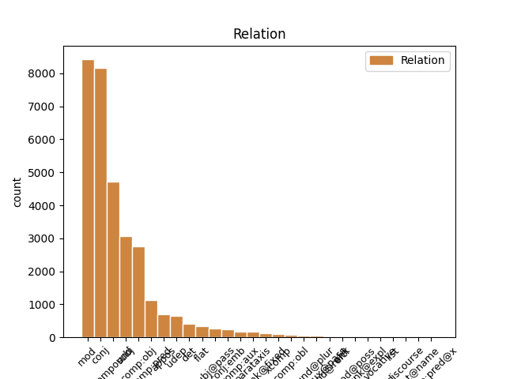
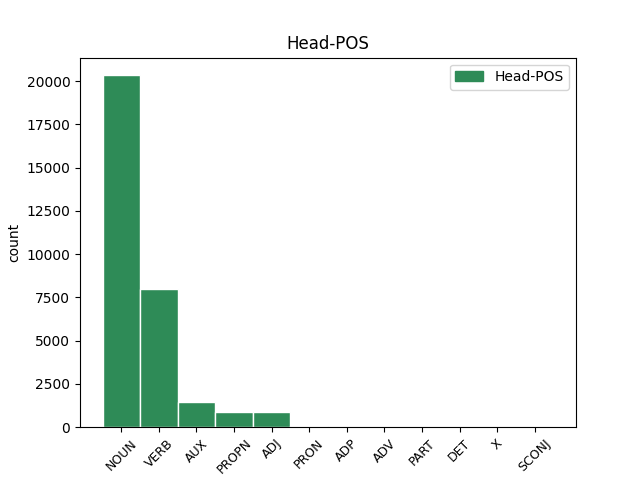
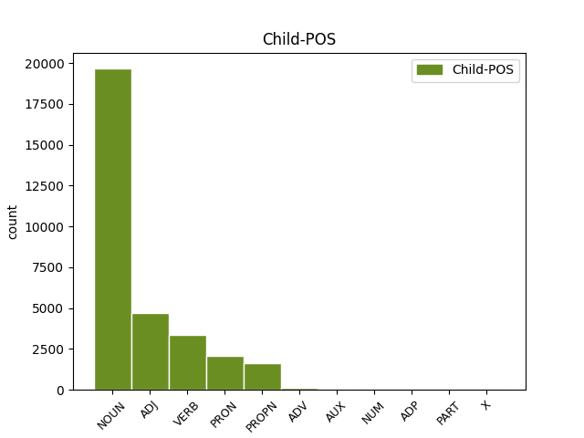

Distribution of features within this leaf



Agreement Rules sorted by frequency.
When the dependent token is None
1 Zuko _ _ _ _ 0 _ _ _
2 ( _ _ _ _ 0 _ _ _
3 Dante _ _ _ _ 0 _ _ _
4 Basco _ _ _ _ 0 _ _ _
5 ) _ _ _ _ 0 _ _ _
6 16 _ _ _ _ 0 _ _ _
7 years _ _ _ _ 0 _ _ _
8 old _ _ _ _ 0 _ _ _
9 prince _ _ _ _ 0 _ _ _
10 of _ _ _ _ 0 _ _ _
11 the _ _ _ _ 0 _ _ _
12 Fire _ _ _ _ 0 _ _ _
13 Nation _ _ _ _ 0 _ _ _
14 , _ _ _ _ 0 _ _ _
15 Gustong _ _ _ _ 0 _ _ _
16 ibalik _ _ _ _ 0 _ _ _
17 ni _ _ _ _ 0 _ _ _
18 Zuko _ _ _ _ 0 _ _ _
19 ang _ _ _ _ 0 _ _ _
20 respeto _ _ _ _ 0 _ _ _
21 ng _ _ _ _ 0 _ _ _
22 kanyang _ _ _ _ 0 _ _ _
23 ama _ _ _ _ 0 _ _ _
24 para _ _ _ _ 0 _ _ _
25 ibalik ibalik VERB _ Degree=Pos|Number=Sing 0 _ _ _
26 ito _ _ _ _ 0 _ _ _
27 kailangang _ _ _ _ 0 _ _ _
28 makuha makuha NOUN _ Number=Sing 25 comp:obj _ _
29 niya _ _ _ _ 0 _ _ _
30 ang _ _ _ _ 0 _ _ _
31 Avatar _ _ _ _ 0 _ _ _
32 . _ _ _ _ 0 _ _ _
When the dependent token is None
1 ZI(D _ _ _ _ 0 _ _ _
2 ) _ _ _ _ 0 _ _ _
3 , _ _ _ _ 0 _ _ _
4 " _ _ _ _ 0 _ _ _
5 matapat _ _ _ _ 0 _ _ _
6 o _ _ _ _ 0 _ _ _
7 tunay _ _ _ _ 0 _ _ _
8 na _ _ _ _ 0 _ _ _
9 anak _ _ _ _ 0 _ _ _
10 na _ _ _ _ 0 _ _ _
11 lalaki _ _ _ _ 0 _ _ _
12 " _ _ _ _ 0 _ _ _
13 ) _ _ _ _ 0 _ _ _
14 ay _ _ _ _ 0 _ _ _
15 ang _ _ _ _ 0 _ _ _
16 pangalan _ _ _ _ 0 _ _ _
17 ng _ _ _ _ 0 _ _ _
18 isang _ _ _ _ 0 _ _ _
19 Sumeryong sumeryong NOUN _ Number=Sing 0 _ _ _
20 Diyos diyos ADJ _ Number=Sing 19 mod _ _
21 ng _ _ _ _ 0 _ _ _
22 pagkain _ _ _ _ 0 _ _ _
23 at _ _ _ _ 0 _ _ _
24 mga _ _ _ _ 0 _ _ _
25 halaman _ _ _ _ 0 _ _ _
26 . _ _ _ _ 0 _ _ _
When the dependent token is None
1 Winakasan winakasan VERB _ Number=Sing 0 _ _ _
2 niya _ _ _ _ 0 _ _ _
3 ang _ _ _ _ 0 _ _ _
4 isang _ _ _ _ 0 _ _ _
5 dantaon _ _ _ _ 0 _ _ _
6 ng _ _ _ _ 0 _ _ _
7 digmaang _ _ _ _ 0 _ _ _
8 sibil _ _ _ _ 0 _ _ _
9 at _ _ _ _ 0 _ _ _
10 binigyan binigyan VERB _ Number=Sing 1 conj _ _
11 ang _ _ _ _ 0 _ _ _
12 Roma _ _ _ _ 0 _ _ _
13 ng _ _ _ _ 0 _ _ _
14 isang _ _ _ _ 0 _ _ _
15 kapanahunan _ _ _ _ 0 _ _ _
16 ng _ _ _ _ 0 _ _ _
17 kapayapaan _ _ _ _ 0 _ _ _
18 , _ _ _ _ 0 _ _ _
19 kasaganaan _ _ _ _ 0 _ _ _
20 , _ _ _ _ 0 _ _ _
21 at _ _ _ _ 0 _ _ _
22 imperyal _ _ _ _ 0 _ _ _
23 na _ _ _ _ 0 _ _ _
24 kadakilaan _ _ _ _ 0 _ _ _
25 . _ _ _ _ 0 _ _ _
When the dependent token is None
1 Yate _ _ _ _ 0 _ _ _
2 , _ _ _ _ 0 _ _ _
3 muglox _ _ _ _ 0 _ _ _
4 archrival _ _ _ _ 0 _ _ _
5 Mirmo _ _ _ _ 0 _ _ _
6 's _ _ _ _ 0 _ _ _
7 , _ _ _ _ 0 _ _ _
8 ay _ _ _ _ 0 _ _ _
9 itinalaga _ _ _ _ 0 _ _ _
10 sa _ _ _ _ 0 _ _ _
11 pamamagitan _ _ _ _ 0 _ _ _
12 ng _ _ _ _ 0 _ _ _
13 Azumi _ _ _ _ 0 _ _ _
14 Hidaka _ _ _ _ 0 _ _ _
15 , _ _ _ _ 0 _ _ _
16 ang _ _ _ _ 0 _ _ _
17 isang _ _ _ _ 0 _ _ _
18 batang _ _ _ _ 0 _ _ _
19 babae _ _ _ _ 0 _ _ _
20 na _ _ _ _ 0 _ _ _
21 din din PRON _ Case=Nom|Number=Sing|Person=2|PronType=Prs 22 subj _ _
22 loves love VERB _ Mood=Ind|Number=Sing|Person=3|Tense=Pres|VerbForm=Fin 0 _ _ _
23 Dylan _ _ _ _ 0 _ _ _
24 at _ _ _ _ 0 _ _ _
25 seloso _ _ _ _ 0 _ _ _
26 ng _ _ _ _ 0 _ _ _
27 Katie _ _ _ _ 0 _ _ _
28 . _ _ _ _ 0 _ _ _
When the dependent token is None
1 Yuuki _ _ _ _ 0 _ _ _
2 Burns _ _ _ _ 0 _ _ _
3 ( _ _ _ _ 0 _ _ _
4 バーンズ勇気 _ _ _ _ 0 _ _ _
5 ) _ _ _ _ 0 _ _ _
6 Kapanganakan _ _ _ _ 0 _ _ _
7 : _ _ _ _ 0 _ _ _
8 27 _ _ _ _ 0 _ _ _
9 Disyembre _ _ _ _ 0 _ _ _
10 1992 _ _ _ _ 0 _ _ _
11 Tirahan _ _ _ _ 0 _ _ _
12 : _ _ _ _ 0 _ _ _
13 Kanagawa _ _ _ _ 0 _ _ _
14 Dugo _ _ _ _ 0 _ _ _
15 : _ _ _ _ 0 _ _ _
16 O _ _ _ _ 0 _ _ _
17 Taas _ _ _ _ 0 _ _ _
18 : _ _ _ _ 0 _ _ _
19 176 _ _ _ _ 0 _ _ _
20 cm _ _ _ _ 0 _ _ _
21 Nasyonalidad nasyonalidad NOUN _ Number=Sing 0 _ _ _
22 : _ _ _ _ 0 _ _ _
23 Amerikanong _ _ _ _ 0 _ _ _
24 - _ _ _ _ 0 _ _ _
25 Hapon _ _ _ _ 0 _ _ _
26 Ahensiya ahensiya PROPN _ Number=Sing 21 appos _ _
27 : _ _ _ _ 0 _ _ _
28 Stardust _ _ _ _ 0 _ _ _
29 Promotions _ _ _ _ 0 _ _ _
30 Kaya _ _ _ _ 0 _ _ _
31 ni _ _ _ _ 0 _ _ _
32 Yuuki _ _ _ _ 0 _ _ _
33 na _ _ _ _ 0 _ _ _
34 tumugtog _ _ _ _ 0 _ _ _
35 ng _ _ _ _ 0 _ _ _
36 mga _ _ _ _ 0 _ _ _
37 tambol _ _ _ _ 0 _ _ _
38 . _ _ _ _ 0 _ _ _
When the dependent token is None
1 Wala _ _ _ _ 0 _ _ _
2 ring _ _ _ _ 0 _ _ _
3 nakatitiyak _ _ _ _ 0 _ _ _
4 sa _ _ _ _ 0 _ _ _
5 angkop _ _ _ _ 0 _ _ _
6 na _ _ _ _ 0 _ _ _
7 haba _ _ _ _ 0 _ _ _
8 para _ _ _ _ 0 _ _ _
9 masabing _ _ _ _ 0 _ _ _
10 dagli _ _ _ _ 0 _ _ _
11 ang _ _ _ _ 0 _ _ _
12 isang _ _ _ _ 0 _ _ _
13 akdang _ _ _ _ 0 _ _ _
14 pampanitikan _ _ _ _ 0 _ _ _
15 . _ _ _ _ 0 _ _ _
16 subalit _ _ _ _ 0 _ _ _
17 sinasabi _ _ _ _ 0 _ _ _
18 na _ _ _ _ 0 _ _ _
19 dapat dapat ADV _ Number=Sing|Voice=Act 22 mod _ _
20 hindi _ _ _ _ 0 _ _ _
21 ito _ _ _ _ 0 _ _ _
22 aabot aabot VERB _ Number=Sing 0 _ _ _
23 sa _ _ _ _ 0 _ _ _
24 haba _ _ _ _ 0 _ _ _
25 ng _ _ _ _ 0 _ _ _
26 isang _ _ _ _ 0 _ _ _
27 maikling _ _ _ _ 0 _ _ _
28 kwento _ _ _ _ 0 _ _ _
29 . _ _ _ _ 0 _ _ _
When the dependent token is None
1 Viking _ _ _ _ 0 _ _ _
2 Penguin _ _ _ _ 0 _ _ _
3 , _ _ _ _ 0 _ _ _
4 2004 _ _ _ _ 0 _ _ _
5 , _ _ _ _ 0 _ _ _
6 p. _ _ _ _ 0 _ _ _
7 3 _ _ _ _ 0 _ _ _
8 . _ _ _ _ 0 _ _ _
9 Si _ _ _ _ 0 _ _ _
10 Hans _ _ _ _ 0 _ _ _
11 Luther _ _ _ _ 0 _ _ _
12 ay ay AUX _ Mood=Ind|Number=Sing|Person=3|Tense=Pres|VerbForm=Fin 0 _ _ _
13 maaimbisyoso _ _ _ _ 0 _ _ _
14 para _ _ _ _ 0 _ _ _
15 sa _ _ _ _ 0 _ _ _
16 kanyang _ _ _ _ 0 _ _ _
17 sarili _ _ _ _ 0 _ _ _
18 at _ _ _ _ 0 _ _ _
19 sa _ _ _ _ 0 _ _ _
20 kanyang _ _ _ _ 0 _ _ _
21 pamilya _ _ _ _ 0 _ _ _
22 at _ _ _ _ 0 _ _ _
23 siya _ _ _ _ 0 _ _ _
24 ay ay AUX _ Mood=Ind|Number=Sing|Person=3|Tense=Pres|VerbForm=Fin 12 conj _ _
25 determinado _ _ _ _ 0 _ _ _
26 na _ _ _ _ 0 _ _ _
27 makita _ _ _ _ 0 _ _ _
28 si _ _ _ _ 0 _ _ _
29 Martin _ _ _ _ 0 _ _ _
30 na _ _ _ _ 0 _ _ _
31 kanyang _ _ _ _ 0 _ _ _
32 panganay _ _ _ _ 0 _ _ _
33 na _ _ _ _ 0 _ _ _
34 lalake _ _ _ _ 0 _ _ _
35 na _ _ _ _ 0 _ _ _
36 maging _ _ _ _ 0 _ _ _
37 isang _ _ _ _ 0 _ _ _
38 abogado _ _ _ _ 0 _ _ _
39 . _ _ _ _ 0 _ _ _
When the dependent token is None
1 Tuwing tuwing ADP _ Number=Sing 4 udep _ _
2 Notsebuwena _ _ _ _ 0 _ _ _
3 , _ _ _ _ 0 _ _ _
4 naghahanda naghahanda VERB _ Number=Sing|Voice=Act 0 _ _ _
5 ang _ _ _ _ 0 _ _ _
6 mag _ _ _ _ 0 _ _ _
7 - _ _ _ _ 0 _ _ _
8 anak _ _ _ _ 0 _ _ _
9 ng _ _ _ _ 0 _ _ _
10 mga _ _ _ _ 0 _ _ _
11 panghating _ _ _ _ 0 _ _ _
12 - _ _ _ _ 0 _ _ _
13 gabing _ _ _ _ 0 _ _ _
14 pamahaw _ _ _ _ 0 _ _ _
15 o _ _ _ _ 0 _ _ _
16 pagkaing _ _ _ _ 0 _ _ _
17 natatangi _ _ _ _ 0 _ _ _
18 at _ _ _ _ 0 _ _ _
19 madalas _ _ _ _ 0 _ _ _
20 ihain _ _ _ _ 0 _ _ _
21 tuwing _ _ _ _ 0 _ _ _
22 may _ _ _ _ 0 _ _ _
23 mga _ _ _ _ 0 _ _ _
24 okasyon _ _ _ _ 0 _ _ _
25 , _ _ _ _ 0 _ _ _
26 kasama _ _ _ _ 0 _ _ _
27 ang _ _ _ _ 0 _ _ _
28 mga _ _ _ _ 0 _ _ _
29 prutas _ _ _ _ 0 _ _ _
30 na _ _ _ _ 0 _ _ _
31 hugis _ _ _ _ 0 _ _ _
32 bilog _ _ _ _ 0 _ _ _
33 . _ _ _ _ 0 _ _ _
When the dependent token is None
1 Siya _ _ _ _ 0 _ _ _
2 ay _ _ _ _ 0 _ _ _
3 nakakontrata _ _ _ _ 0 _ _ _
4 sa _ _ _ _ 0 _ _ _
5 LVN _ _ _ _ 0 _ _ _
6 Pictures _ _ _ _ 0 _ _ _
7 at _ _ _ _ 0 _ _ _
8 nakagawa _ _ _ _ 0 _ _ _
9 ng _ _ _ _ 0 _ _ _
10 mga _ _ _ _ 0 _ _ _
11 pelikula _ _ _ _ 0 _ _ _
12 halos _ _ _ _ 0 _ _ _
13 dalawang dalawang NUM _ Definite=Ind|Gender=Masc|Number=Plur|NumType=Card 14 mod _ _
14 dekada dekada NOUN _ Definite=Ind|Gender=Neut|Number=Plur 0 _ _ _
15 . _ _ _ _ 0 _ _ _
When the dependent token is None
1 Takot _ _ _ _ 0 _ _ _
2 na _ _ _ _ 0 _ _ _
3 takot _ _ _ _ 0 _ _ _
4 , _ _ _ _ 0 _ _ _
5 nakiusap _ _ _ _ 0 _ _ _
6 si _ _ _ _ 0 _ _ _
7 Dely _ _ _ _ 0 _ _ _
8 sa _ _ _ _ 0 _ _ _
9 ama _ _ _ _ 0 _ _ _
10 ni biti PART _ Mood=Ind|Number=Sing|Person=3|Polarity=Neg|Tense=Pres|VerbForm=Fin 11 mod _ _
11 Noel Noel PROPN _ Case=Nom|Gender=Masc|Number=Sing 0 _ _ _
12 na _ _ _ _ 0 _ _ _
13 kausapin _ _ _ _ 0 _ _ _
14 si _ _ _ _ 0 _ _ _
15 Dadong _ _ _ _ 0 _ _ _
16 . _ _ _ _ 0 _ _ _
When the dependent token is None
1 Pag pag X _ Number=Sing 3 unk _ _
2 - _ _ _ _ 0 _ _ _
3 iwas iwas NOUN _ Number=Sing 0 _ _ _
4 Noong _ _ _ _ 0 _ _ _
5 taong _ _ _ _ 0 _ _ _
6 2011 _ _ _ _ 0 _ _ _
7 , _ _ _ _ 0 _ _ _
8 walang _ _ _ _ 0 _ _ _
9 umiiral _ _ _ _ 0 _ _ _
10 na _ _ _ _ 0 _ _ _
11 bakuna _ _ _ _ 0 _ _ _
12 para _ _ _ _ 0 _ _ _
13 sa _ _ _ _ 0 _ _ _
14 hepatitis _ _ _ _ 0 _ _ _
15 C. _ _ _ _ 0 _ _ _
16 Ang _ _ _ _ 0 _ _ _
17 mga _ _ _ _ 0 _ _ _
18 bakuna _ _ _ _ 0 _ _ _
19 ay _ _ _ _ 0 _ _ _
20 nasa _ _ _ _ 0 _ _ _
21 ilalim _ _ _ _ 0 _ _ _
22 pa _ _ _ _ 0 _ _ _
23 ng _ _ _ _ 0 _ _ _
24 pagbubuo _ _ _ _ 0 _ _ _
25 at _ _ _ _ 0 _ _ _
26 ang _ _ _ _ 0 _ _ _
27 mga _ _ _ _ 0 _ _ _
28 iba _ _ _ _ 0 _ _ _
29 ay _ _ _ _ 0 _ _ _
30 nagpakita _ _ _ _ 0 _ _ _
31 ng _ _ _ _ 0 _ _ _
32 nagbibigay _ _ _ _ 0 _ _ _
33 pag _ _ _ _ 0 _ _ _
34 - _ _ _ _ 0 _ _ _
35 asang _ _ _ _ 0 _ _ _
36 mga _ _ _ _ 0 _ _ _
37 resulta _ _ _ _ 0 _ _ _
38 . _ _ _ _ 0 _ _ _
Disagree Examples:
1 A _ _ _ _ 0 _ _ _
2 description _ _ _ _ 0 _ _ _
3 of _ _ _ _ 0 _ _ _
4 the _ _ _ _ 0 _ _ _
5 molar molar NOUN _ Number=Sing 6 compound _ _
6 teeth teeth NOUN _ Number=Plur 0 _ _ _
7 and _ _ _ _ 0 _ _ _
8 investing _ _ _ _ 0 _ _ _
9 tissues _ _ _ _ 0 _ _ _
10 of _ _ _ _ 0 _ _ _
11 normal _ _ _ _ 0 _ _ _
12 guinea _ _ _ _ 0 _ _ _
13 pigs _ _ _ _ 0 _ _ _
14 ' _ _ _ _ 0 _ _ _
15 ' _ _ _ _ 0 _ _ _
16 ( _ _ _ _ 0 _ _ _
17 Isang _ _ _ _ 0 _ _ _
18 paglalarawan _ _ _ _ 0 _ _ _
19 ng _ _ _ _ 0 _ _ _
20 mga _ _ _ _ 0 _ _ _
21 ngiping _ _ _ _ 0 _ _ _
22 pangnguya _ _ _ _ 0 _ _ _
23 at _ _ _ _ 0 _ _ _
24 puhunang _ _ _ _ 0 _ _ _
25 tisyu _ _ _ _ 0 _ _ _
26 ng _ _ _ _ 0 _ _ _
27 mga _ _ _ _ 0 _ _ _
28 karaniwang _ _ _ _ 0 _ _ _
29 dagang _ _ _ _ 0 _ _ _
30 - _ _ _ _ 0 _ _ _
31 kosta _ _ _ _ 0 _ _ _
32 . _ _ _ _ 0 _ _ _
1 A _ _ _ _ 0 _ _ _
2 description _ _ _ _ 0 _ _ _
3 of _ _ _ _ 0 _ _ _
4 the _ _ _ _ 0 _ _ _
5 molar _ _ _ _ 0 _ _ _
6 teeth _ _ _ _ 0 _ _ _
7 and _ _ _ _ 0 _ _ _
8 investing _ _ _ _ 0 _ _ _
9 tissues _ _ _ _ 0 _ _ _
10 of _ _ _ _ 0 _ _ _
11 normal _ _ _ _ 0 _ _ _
12 guinea guinea NOUN _ Number=Sing 13 compound _ _
13 pigs pig NOUN _ Number=Plur 0 _ _ _
14 ' _ _ _ _ 0 _ _ _
15 ' _ _ _ _ 0 _ _ _
16 ( _ _ _ _ 0 _ _ _
17 Isang _ _ _ _ 0 _ _ _
18 paglalarawan _ _ _ _ 0 _ _ _
19 ng _ _ _ _ 0 _ _ _
20 mga _ _ _ _ 0 _ _ _
21 ngiping _ _ _ _ 0 _ _ _
22 pangnguya _ _ _ _ 0 _ _ _
23 at _ _ _ _ 0 _ _ _
24 puhunang _ _ _ _ 0 _ _ _
25 tisyu _ _ _ _ 0 _ _ _
26 ng _ _ _ _ 0 _ _ _
27 mga _ _ _ _ 0 _ _ _
28 karaniwang _ _ _ _ 0 _ _ _
29 dagang _ _ _ _ 0 _ _ _
30 - _ _ _ _ 0 _ _ _
31 kosta _ _ _ _ 0 _ _ _
32 . _ _ _ _ 0 _ _ _
1 Ako _ _ _ _ 0 _ _ _
2 mismo _ _ _ _ 0 _ _ _
3 ay _ _ _ _ 0 _ _ _
4 taos _ _ _ _ 0 _ _ _
5 - _ _ _ _ 0 _ _ _
6 puso _ _ _ _ 0 _ _ _
7 at _ _ _ _ 0 _ _ _
8 interesado _ _ _ _ 0 _ _ _
9 sa _ _ _ _ 0 _ _ _
10 mga _ _ _ _ 0 _ _ _
11 veterano _ _ _ _ 0 _ _ _
12 dahil _ _ _ _ 0 _ _ _
13 , _ _ _ _ 0 _ _ _
14 dalawang dalawang NUM _ Case=Nom|Gender=Fem|Number=Plur|NumType=Card 15 mod _ _
15 kapatid kapatid NOUN _ Number=Sing 0 _ _ _
16 kong _ _ _ _ 0 _ _ _
17 lalaki _ _ _ _ 0 _ _ _
18 at _ _ _ _ 0 _ _ _
19 ang _ _ _ _ 0 _ _ _
20 aking _ _ _ _ 0 _ _ _
21 ama _ _ _ _ 0 _ _ _
22 ay _ _ _ _ 0 _ _ _
23 parehong _ _ _ _ 0 _ _ _
24 nasa _ _ _ _ 0 _ _ _
25 Marines _ _ _ _ 0 _ _ _
26 . _ _ _ _ 0 _ _ _
1 " _ _ _ _ 0 _ _ _
2 Ako _ _ _ _ 0 _ _ _
3 Sana'y _ _ _ _ 0 _ _ _
4 Mahalin _ _ _ _ 0 _ _ _
5 Mo _ _ _ _ 0 _ _ _
6 " _ _ _ _ 0 _ _ _
7 , _ _ _ _ 0 _ _ _
8 You _ _ _ _ 0 _ _ _
9 Must _ _ _ _ 0 _ _ _
10 Love _ _ _ _ 0 _ _ _
11 Me _ _ _ _ 0 _ _ _
12 , _ _ _ _ 0 _ _ _
13 Unang _ _ _ _ 0 _ _ _
14 Bahagi _ _ _ _ 0 _ _ _
15 , _ _ _ _ 0 _ _ _
16 56 _ _ _ _ 0 _ _ _
17 Best _ _ _ _ 0 _ _ _
18 of _ _ _ _ 0 _ _ _
19 Tunog _ _ _ _ 0 _ _ _
20 Sikat _ _ _ _ 0 _ _ _
21 non _ _ _ _ 0 _ _ _
22 - _ _ _ _ 0 _ _ _
23 stop _ _ _ _ 0 _ _ _
24 , _ _ _ _ 0 _ _ _
25 DYNA DYNA PROPN _ Number=Sing 26 compound _ _
26 Products Products PROPN _ Number=Plur|Shared=Yes 0 _ _ _
27 Inc _ _ _ _ 0 _ _ _
28 . _ _ _ _ 0 _ _ _
29 , _ _ _ _ 0 _ _ _
30 Philippines _ _ _ _ 0 _ _ _
31 . _ _ _ _ 0 _ _ _
1 " _ _ _ _ 0 _ _ _
2 Ako _ _ _ _ 0 _ _ _
3 Sana'y _ _ _ _ 0 _ _ _
4 Mahalin _ _ _ _ 0 _ _ _
5 Mo _ _ _ _ 0 _ _ _
6 " _ _ _ _ 0 _ _ _
7 , _ _ _ _ 0 _ _ _
8 You _ _ _ _ 0 _ _ _
9 Must _ _ _ _ 0 _ _ _
10 Love _ _ _ _ 0 _ _ _
11 Me _ _ _ _ 0 _ _ _
12 , _ _ _ _ 0 _ _ _
13 Unang Unang PROPN _ Number=Sing 0 _ _ _
14 Bahagi _ _ _ _ 0 _ _ _
15 , _ _ _ _ 0 _ _ _
16 56 _ _ _ _ 0 _ _ _
17 Best _ _ _ _ 0 _ _ _
18 of _ _ _ _ 0 _ _ _
19 Tunog _ _ _ _ 0 _ _ _
20 Sikat _ _ _ _ 0 _ _ _
21 non _ _ _ _ 0 _ _ _
22 - _ _ _ _ 0 _ _ _
23 stop _ _ _ _ 0 _ _ _
24 , _ _ _ _ 0 _ _ _
25 DYNA _ _ _ _ 0 _ _ _
26 Products Products PROPN _ Number=Plur|Shared=Yes 13 appos _ _
27 Inc _ _ _ _ 0 _ _ _
28 . _ _ _ _ 0 _ _ _
29 , _ _ _ _ 0 _ _ _
30 Philippines _ _ _ _ 0 _ _ _
31 . _ _ _ _ 0 _ _ _